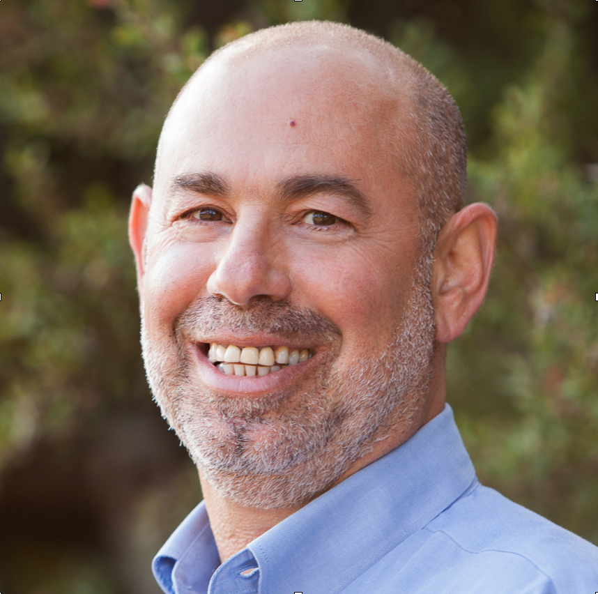

Itzhak Kurek
 - CEO and Co-Founder
Click For Background
Dr. Kurek is a senior biotech leader with experience in managing, consulting and research roles in the Ag-Biotech, Human and Nutritional Supplements, Renewable Energy and Biobased Products businesses. Dr. Kurek joined Cannformatics from Solix Algredients, a B2B supplier of algae-based natural ingredients where he served as R&D consultant at the Vice-President level. Previously, Dr. Kurek worked at Kiverdi inc., a company making high-value oils and chemicals from waste carbon sources, as the Senior Director of R&D. Dr. Kurek held research scientist positions at Pioneer Hi-Bred (DuPont), Verdia Inc. and Maxygen Inc. Dr. Kurek has published 20 peer reviewed scientific papers and 10 granted US and international patents cited over 1,800 times.
Dr. Kurek received his Ph.D. in Plant Sciences from Tel Aviv University and completed his postdoctoral research at the University of California, Davis. Dr. Kurek has also conducted research at the Technical University of Munich, John Innes Center Norwich, C.N.R.S Bordeaux and the Lawrence Berkeley National Laboratories.
Read Dr. Kurek's recent articles on cannabis and the Cannformatics approach:
How cannabinoids work part 1: Paths into the body
How cannabinoids work part 2: Paths through the body
How cannabinoids work part 3: Metabolism and elimination
Dr. Kurek's recent article on the cannabinoids role in the plant:
Better Living through Biochemistry: The Molecules Cannabis Plants Make to Stay Vital
Robert McKee
 - CTO and Co-Founder
- CTO and Co-Founder
Click For Background
Mr. McKee is a patent lawyer with expertise in genetics, machine learning/artificial intelligence, data privacy law and technology commercialization. Mr. McKee joined Cannformatics from his law practice where he writes patents and ensures compliance with data privacy laws, and develops IP protection strategies for very early stage companies to ensure value creation. Previously, Mr. McKee worked at Kiverdi Inc., a company making high-value oils and chemicals from waste carbon sources, as IP and Business Development Associate. Mr. McKee held a microbiologist position at the Texas Department of State Health Services.
Mr. McKee received his Master of Science in Technology Commercialization from the Red McCombs School of Business at the University of Texas, Austin. He holds a JD from the University of Houston, Texas and a BS in Microbiology from The University of Texas, Austin. Mr. McKee has also completed the UDACITY Machine Learning Engineer Nanodegree.